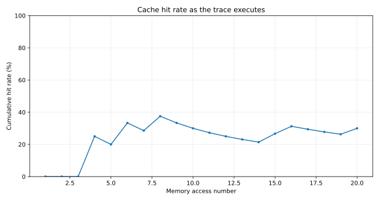
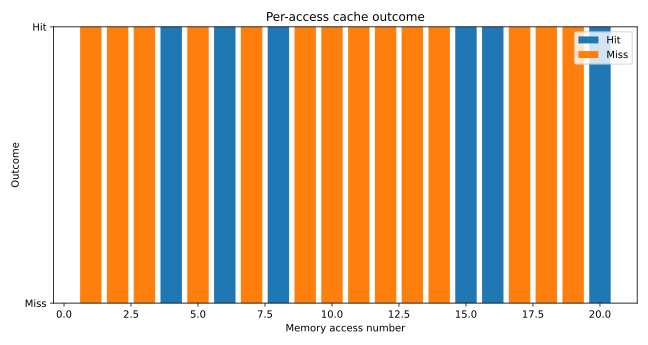
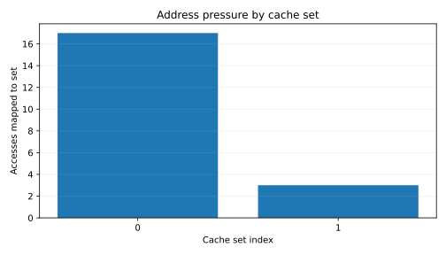

Generated from simulator CSV outputs; no chart values are hard-coded.
The trace issued 20 memory accesses. 6 were cache hits and 14 were misses, giving a 30.0% hit rate. A hit means the requested block was already present in its indexed set. A miss causes a line fill; when all ways in that set are occupied, the configured replacement policy chooses a victim. 11 valid lines were evicted, including 1 dirty lines. Dirty evictions require writeback to the next memory level in this model.
Interpretation: A high hit rate indicates that this particular access sequence reuses blocks while they remain resident. It does not prove that this cache configuration is universally better. Compare configurations using the exact same trace and change one parameter at a time.



| Accesses | 20 |
|---|---|
| Hits | 6 |
| Misses | 14 |
| Hit Rate | 0.3 |
| Miss Rate | 0.7 |
| Writes | 2 |
| Writebacks | 1 |
| Write Throughs | 0 |
| Fills | 14 |
| Amat | 36 |
| Hit Latency | 1 |
| Miss Penalty | 50 |
| Sets | 2 |
| Ways | 2 |
| Capacity Bytes | 256 |
| Line Size Bytes | 64 |
| Policy | lru |
| Write Policy | wb |
| Write Allocate | 1 |
| Seed | 11400714819323198485 |
Model limits: one cache level, blocking conceptual accesses, write-allocate, write-back dirty tracking, and either LRU or FIFO replacement. No real CPU timing or Spectre behaviour is modelled here.